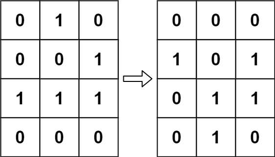
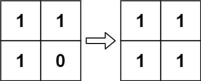

| Category | Difficulty | Likes | Dislikes |
|---|---|---|---|
| Algorithms | Medium | 6750 | 610 |
array | matrix | simulation
amazon | microsoft | salesforce | bloomberg | facebook | warnermedia | oracle | riot-games | bitgo | dropbox | google | snapchat | two-sigma
According to Wikipedia's article: "The Game of Life, also known simply as Life, is a cellular automaton devised by the British mathematician John Horton Conway in 1970."
The board is made up of an m x n grid of cells, where each cell has an initial state: live (represented by a 1) or dead (represented by a 0). Each cell interacts with its eight neighbors (horizontal, vertical, diagonal) using the following four rules (taken from the above Wikipedia article):
The next state of the board is determined by applying the above rules simultaneously to every cell in the current state of the m x n grid board. In this process, births and deaths occur simultaneously.
Given the current state of the board, update the board to reflect its next state.
Note that you do not need to return anything.
Example 1:

Input: board = [[0,1,0],[0,0,1],[1,1,1],[0,0,0]]
Output: [[0,0,0],[1,0,1],[0,1,1],[0,1,0]]Example 2:

Input: board = [[1,1],[1,0]]
Output: [[1,1],[1,1]]
Constraints:
m == board.lengthn == board[i].length1 <= m, n <= 25board[i][j] is 0 or 1.
Follow up: